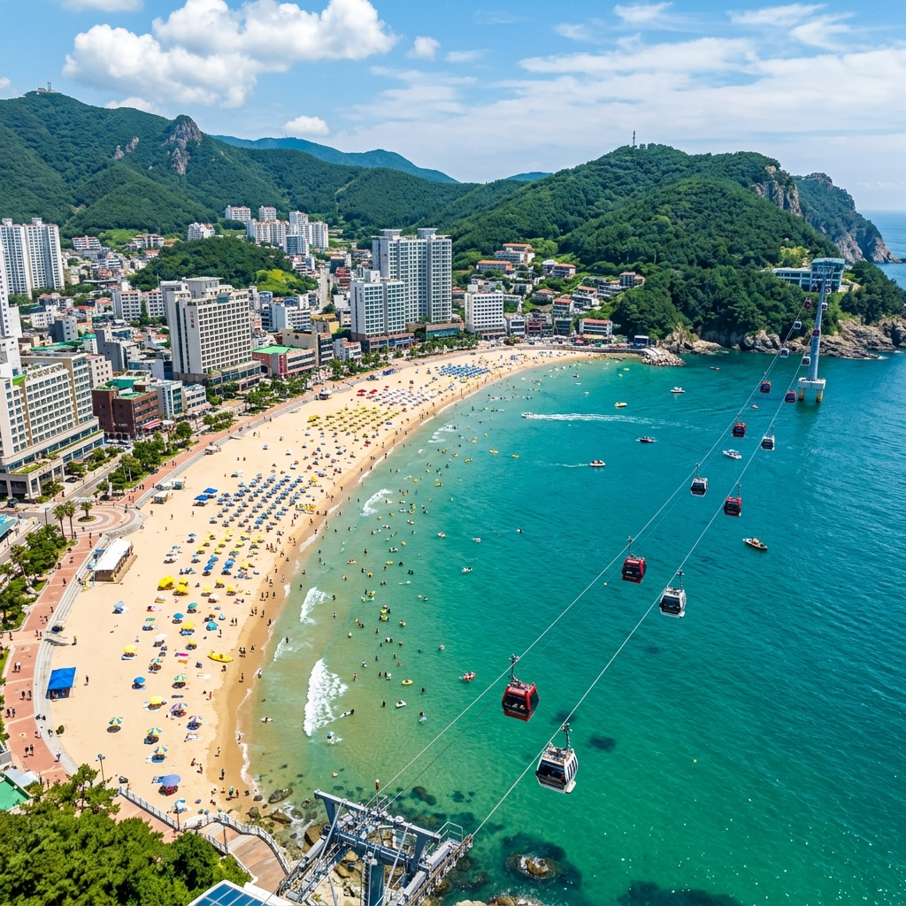
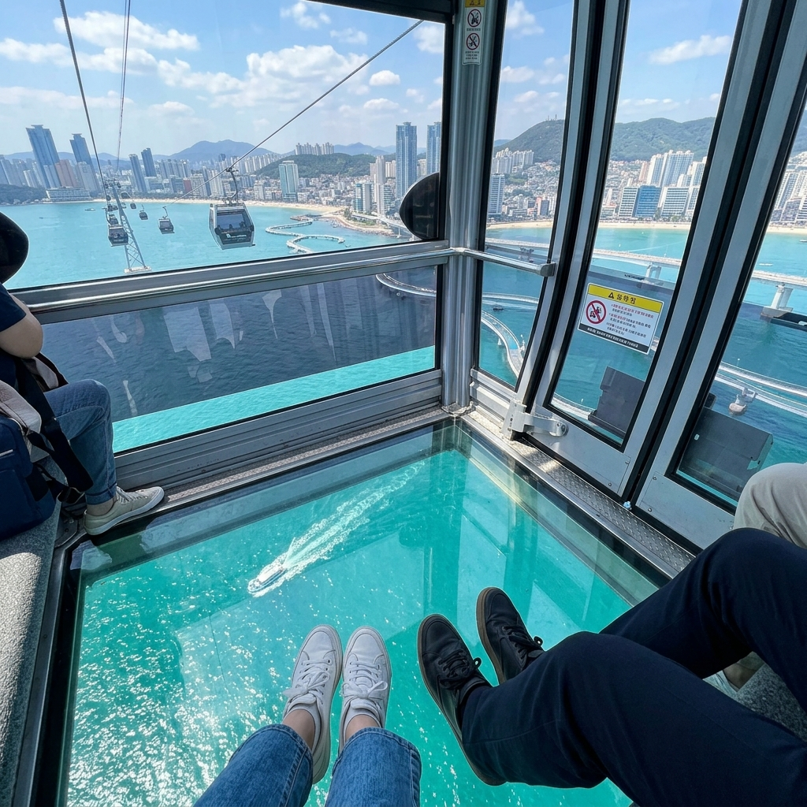
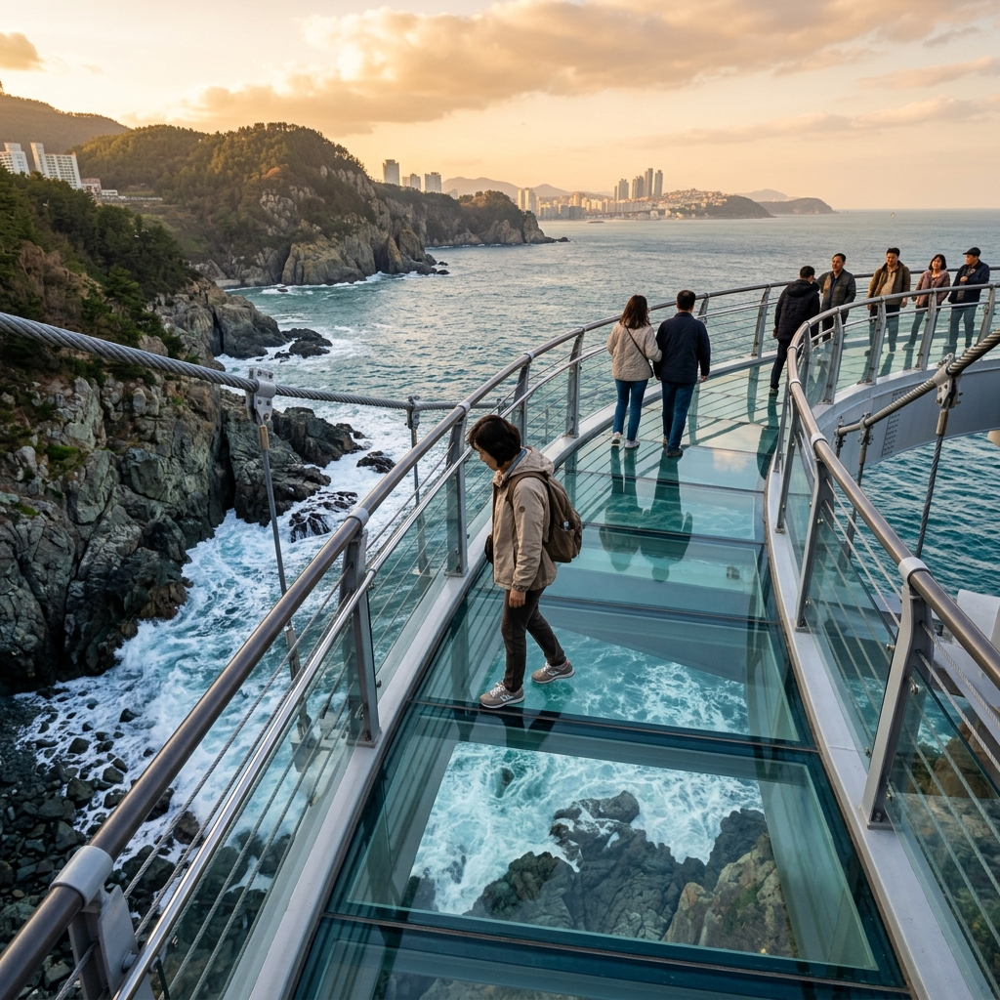

먼저 일정부터 확인해 보겠습니다.
2026년 송도 해수욕장의 공식 개장 날짜는 2026년 6월 1일(월)입니다.
이 날은 송도 한 곳만 여는 게 아니라 부산의 대표 해수욕장들이 한꺼번에 문을 여는 날로, 해마다 6월 1일이 부산 해수욕장 시즌의 출발점 역할을 합니다.
개장일에는 부산시 서구청이 주관하는 기념행사가 마련되고, 이때부터 해변 안전 요원 배치와 구급 시설 운영이 본격적으로 가동됩니다.
다만 6월 초의 바닷물은 아직 한여름만큼 데워지지 않은 상태라, 본격적인 입수보다는 맑은 하늘과 시원한 바닷바람을 즐기기에 더 알맞은 시기입니다.
그래서 6월에 방문한다면 수영을 일정의 중심에 두기보다 해변 산책과 케이블카, 스카이워크 체험 위주로 코스를 짜는 편이 훨씬 만족스럽습니다.
개장일부터 7월 말까지는 성수기에 진입하기 전 단계라, 주말에 가더라도 비교적 한가하게 둘러볼 수 있습니다.
샤워장과 탈의실, 파라솔 대여 같은 구내 편의시설은 개장일을 기점으로 차례차례 문을 엽니다.
다만 개장 초기에는 일부 시설이 아직 정비 중일 수 있으므로, 출발 전에 부산 서구청 홈페이지나 공식 SNS에서 운영 상황을 미리 살펴보길 권합니다.
해수욕장 개장 기간은 보통 9월 초까지로, 공식 안전 요원과 구급 시설 운영도 이 기간에 집중됩니다.
9월 이후에는 안전 요원이 빠지면서 해수욕 비공식 기간으로 바뀌지만, 해변 자체는 사철 언제든 찾아갈 수 있습니다.
송도 해수욕장을 그저 흔한 바닷가로 생각하면 곤란합니다.
이곳은 1913년에 정식으로 문을 연 뒤 100년을 훌쩍 넘긴 역사를 지닌, 국내 최초의 공설 해수욕장으로 기록되어 있습니다.
일제강점기부터 부산 사람들의 여름 피서지로 사랑받아 온 이 해변은 근현대사의 격동과 함께 오르내림을 겪으면서도 끊기지 않고 명맥을 이어 왔습니다.
행정구역상으로는 부산광역시 서구 암남동 일대에 자리하며, 부산 도심에서 그리 떨어져 있지 않아 접근성이 좋은 편입니다.
부산역에서 차로 약 15~20분, 지하철이라면 토성역에서 마을버스로 갈아타 약 25~30분이면 도착할 수 있습니다.
해변 길이는 약 800m, 폭은 약 50m로 광안리나 해운대보다는 아담하지만, 송도만이 가진 지형적 매력이 분명합니다.
동쪽은 송림공원이 병풍처럼 해변을 감싸고, 서쪽은 암남공원의 깎아지른 절벽이 바다와 맞닿아 빼어난 경관을 만들어 냅니다.
이 동서 양쪽 공원을 잇는 시설이 바로 송도 해상케이블카입니다.
케이블카에 올라 바다 위를 미끄러지듯 가로지르며 내려다보는 송도 해변의 풍경은 어떤 사진으로도 다 담기 어려운 장면입니다.
2013년부터 본격적인 재정비와 재개발이 추진되면서, 지금의 송도는 낡았던 옛 이미지를 완전히 벗고 세련된 해변 관광지로 거듭났습니다.
해상케이블카에 스카이워크, 암남공원 둘레길, 어린이 물놀이장, 잘 정비된 해변 산책로까지 더해져 오늘날의 송도는 세대를 가리지 않고 즐길 거리가 풍부한 복합 명소가 되었습니다.
해운대나 광안리보다 상대적으로 덜 붐빈다는 점도 많은 여행자가 송도를 고르는 이유입니다.
6월 개장 시즌이면 초여름의 선선한 바닷바람을 맞으며 아직 한산한 해변을 여유롭게 누릴 수 있습니다.
7~8월 성수기의 인파를 피해 6월 초에 일정을 잡는 것 역시 충분히 현명한 선택입니다.
송도 해상케이블카는 2017년 다시 운행을 시작한 뒤로 부산 여행에서 빼놓을 수 없는 코스로 굳어진 명물입니다.
송림공원(동쪽 스테이션)에서 출발해 암남공원 스카이파크(서쪽 스테이션)까지 총 1.62km 구간을 바다 위로 가로지릅니다.
편도 소요 시간은 약 15~20분 남짓인데, 그 짧은 사이에 송도 해변과 바다, 부산 도심의 스카이라인을 한꺼번에 눈에 담을 수 있습니다.
곤돌라는 일반 곤돌라와 크리스탈 곤돌라(바닥이 투명한 유리 곤돌라) 두 가지로 나뉘어 운영됩니다.
크리스탈 곤돌라는 바닥을 투명 강화유리로 만들어, 발밑으로 바다가 그대로 비치는 짜릿한 경험을 안겨 줍니다.
처음에는 약간 아찔할 수 있지만, 한 번 타 보면 그 황홀한 시야에 빠져 편도가 너무 짧게 느껴질 정도입니다.
운영 시간은 계절마다 달라집니다.
3월부터 6월, 그리고 9월부터 11월까지는 오전 9시부터 오후 9시까지, 7~8월 성수기에는 오전 9시부터 오후 10시까지 운행합니다.
주말이나 공휴일에는 대기가 길어질 수 있으니, 현장에서 줄을 서기보다 사전 온라인 예약을 적극 활용하시길 권합니다.
요금은 성인 기준으로 편도와 왕복으로 구분되고, 일반 곤돌라보다 크리스탈 곤돌라가 조금 더 비싼 편입니다.
정확한 금액은 운영사 공식 홈페이지나 예약 앱에서 확인하시는 것이 가장 정확합니다.
시즌마다 요금이 조금씩 바뀔 수 있으므로, 출발 전에 공식 채널에서 한 번 더 확인하는 습관을 권합니다.
케이블카에서 놓치기 아까운 순간은 해 질 무렵의 석양 탑승입니다.
서쪽 암남공원 쪽으로 떨어지는 붉은 노을이 바다 위에 번지는 장면은 부산에서도 손에 꼽히는 경관입니다.
여름철이라면 오후 7~8시 사이 탑승이 석양을 가장 잘 감상할 수 있는 황금 시간대입니다.
| 시즌 구분 | 운행 시간 | 참고 사항 |
|---|---|---|
| 3월~6월 (봄·초여름) | 09:00 ~ 21:00 | 개장 직후 시기 |
| 7월~8월 (성수기) | 09:00 ~ 22:00 | 야간 운행 한 시간 연장 |
| 9월~11월 (가을) | 09:00 ~ 21:00 | 성수기가 끝난 뒤 |
| 12월~2월 (겨울) | 별도 공지 | 기상 상황에 따라 운행 변동 |

케이블카와 짝을 이루는 송도의 또 다른 간판 명소가 바로 스카이워크로, 암남공원 해안 절벽 끝에 놓인 유리 바닥 해상 산책로입니다.
절벽 아래로 파도가 부딪치는 바위가 그대로 들여다보이는 투명 강화유리 위를 걷는 일은, 처음엔 발이 잘 떨어지지 않을 만큼 오싹합니다.
그렇지만 첫발을 내딛고 나면 파도가 부서지며 만드는 흰 거품과 그 너머의 짙푸른 바다가 시야를 가득 채우고, 두려움은 어느새 황홀함으로 바뀝니다.
스카이워크는 암남공원 안에 자리해 있고 케이블카 서쪽 스테이션인 스카이파크와 맞붙어 있어, 케이블카에서 내린 뒤 곧장 스카이워크로 넘어가는 동선이 가장 효율적입니다.
유리 바닥 산책로 길이는 약 365m 정도의 호젓한 코스이며, 난간이 설치돼 있어 안전하게 걸을 수 있습니다.
그래도 고소공포증이 있다면 무리하지 말고, 함께 온 일행의 속도에 맞춰 천천히 걸어가시길 권합니다.
스카이워크 곳곳에는 전망 지점이 마련돼 있어, 암남반도의 기암절벽과 멀리 보이는 가덕도, 거가대교 방면 바다 풍경까지 파노라마로 펼쳐 볼 수 있습니다.
아침 일찍이나 해 질 녘에는 빛의 방향이 달라지면서 바다 색이 완전히 다른 분위기로 변합니다.
아침에는 동쪽에서 들어오는 햇살이 바다를 에메랄드빛으로 물들이고, 저녁에는 서쪽으로 지는 노을이 수면을 황금빛으로 덮습니다.
스카이워크 주변에는 포토존이 여러 군데 있는데, 그중에서도 절벽 끝에서 바다를 배경으로 찍는 사진이 송도 여행의 인증샷 1순위로 꼽힙니다.
사진 명당은 주말이면 줄을 서야 할 때도 있으니, 시간 여유가 된다면 평일 방문을 검토해 보시기 바랍니다.
스카이워크 입장료는 성인 기준 소정의 금액이 있고, 현장에서 현금과 카드 결제 모두 가능합니다.
정확한 요금과 운영 시간은 부산시 서구청이나 스카이워크 운영 홈페이지에서 미리 확인해 두시면 좋습니다.
비가 오면 안전상의 이유로 입장이 제한될 수 있으니, 날씨 확인은 반드시 챙겨야 합니다.

암남공원이 스카이워크와 케이블카만 있는 곳이라고 생각하면 절반만 본 셈입니다.
공원 전체를 두르는 암남공원 둘레길은 부산에서도 비교적 덜 알려진, 숨은 보석 같은 산책 코스입니다.
암남반도 해안선을 따라 닦인 이 길은 빽빽한 해송(곰솔)과 낙엽수가 만드는 그늘 아래로 시원한 바닷바람이 스며들어, 걷기에 더없이 좋은 환경을 갖추고 있습니다.
전체 길이는 약 3.5km 안팎으로, 오르내리는 구간이 있긴 하지만 대체로 완만한 편이라 등산 장비 없이도 가볍게 도전할 수 있습니다.
이 둘레길에서 가장 인상 깊은 대목은 바다와 가장 맞닿은 해안 절벽 구간입니다.
오른편에서는 거센 파도가 절벽에 부딪혀 하얗게 부서지고, 왼편으로는 짙은 숲이 터널처럼 이어집니다.
이 구간을 걷다 보면 부산이라는 대도시 안에 이렇게 고요한 자연이 숨어 있다는 사실에 새삼 놀라게 됩니다.
둘레길 곳곳에는 작은 전망 데크가 놓여 있어, 잠시 멈춰 서서 탁 트인 바다를 바라보기 좋습니다.
날이 맑은 날에는 멀리 가덕도와 거가대교, 때로는 대마도 방향까지도 시야에 들어옵니다.
코스 중간에는 암남공원 안의 작은 연못과 야생화 군락을 지나는 길도 있어, 계절마다 다른 꽃을 만나는 재미가 쏠쏠합니다.
6월이면 해안 비탈에 자생하는 해당화와 인동덩굴 꽃이 피어 은은한 향기가 퍼집니다.
쉬엄쉬엄 걸으며 둘러본다면 소요 시간은 1시간 30분에서 2시간 정도로 잡으면 적당합니다.
케이블카 서쪽 스테이션(스카이파크)을 기점으로 출발해 둘레길을 한 바퀴 돌고 다시 케이블카로 동쪽까지 돌아오는 코스를 권합니다.
등산화나 트레킹화를 신으면 한결 편하게 걸을 수 있고, 물과 가벼운 간식을 챙겨 가면 더욱 좋습니다.
송도 해수욕장은 크게 동편 구역과 서편 구역으로 나뉘며, 두 구역은 시설과 분위기가 조금씩 다릅니다.
동편 구역은 송림공원에 가까운 쪽으로, 케이블카 동쪽 스테이션이 이곳에 자리합니다.
이 구역은 편의시설이 비교적 잘 갖춰져 있어 샤워장과 탈의실, 화장실이 한데 모여 있습니다.
파라솔과 튜브를 빌려주는 업체도 주로 동편 쪽에 몰려 있어서, 물놀이가 주목적이라면 동편을 거점으로 삼는 편이 편리합니다.
서편 구역은 암남공원 방향으로 이어지는 쪽으로, 동편보다 한층 조용하고 한적합니다.
파도가 동편보다 조금 센 편이라, 입수보다는 해변 산책이나 사진 촬영을 즐기려는 사람이 많이 찾습니다.
두 구역 사이에는 해변을 따라 산책로가 이어져 있어, 천천히 걸으며 이동하기에 좋습니다.
안전 수칙으로는, 물에 들어갈 때 반드시 지정된 수영 구역 안에서만 입수해야 합니다.
개장 초기인 6월에는 안전 요원 배치가 아직 완전히 갖춰지지 않은 구간이 있을 수 있으니 한층 더 조심해야 합니다.
술을 마신 뒤 입수하는 행위는 절대 금지이며, 반려동물은 지정 구역 밖 모래사장 출입이 제한됩니다.
어린이와 함께라면 파도 상태를 늘 살피고, 반드시 어른이 동행한 채로 물놀이를 즐겨야 합니다.
6월의 송도 해변 모래는 여름 전 깨끗한 상태를 유지하고 있어, 모래놀이나 비치발리볼 같은 해변 레저를 즐기기에 최적의 조건입니다.
햇볕이 강한 낮 시간대(오전 11시~오후 2시)에는 자외선 차단제를 꼭 챙기고, 오랜 시간 직사광선에 노출되지 않도록 주의하시기 바랍니다.
송도 해수욕장 주변에는 해산물 요리를 중심으로 다양한 식당과 카페가 들어서 있습니다.
바다와 바로 맞닿아 있어 식사하며 바다를 바라볼 수 있는 뷰 맛집이 많아, 단순히 맛 이상의 경험을 안겨 줍니다.
이 동네에 왔다면 해산물 요리는 꼭 한 번 맛봐야 합니다.
암남동과 괴정동 사이 어촌 마을 인근에는 싱싱한 회와 해산물 찜을 합리적인 가격에 맛볼 수 있는 식당이 모여 있습니다.
이 지역에서는 방어회, 광어회, 문어숙회, 해물탕이 특히 신선하고 맛있기로 이름나 있습니다.
어묵 국물도 그냥 지나칠 수 없습니다.
부산의 명물인 어묵을 해변 포장마차에서 뜨끈한 국물과 함께 즐기는 것이 송도 여행의 정석 코스입니다.
선선한 아침이나 저녁에 따뜻한 어묵 국물 한 컵을 들고 해변을 거니는 것만으로도 부산 여행의 진수를 맛볼 수 있습니다.
카페는 최근 몇 년 사이 송도 해변을 따라 세련된 분위기의 공간들이 부쩍 늘었습니다.
바다가 보이는 루프탑 카페나 큰 통창으로 파도 소리와 함께 커피를 즐길 수 있는 공간이 인기를 끌고 있습니다.
케이블카 동쪽 스테이션 근처에는 야외 테라스를 갖춘 카페가 모여 있어, 케이블카를 기다리는 동안 여유롭게 음료를 즐기기 좋습니다.
부산을 대표하는 돼지국밥도 이 일대에서 어렵지 않게 찾을 수 있습니다.
서구 일대에는 예부터 돼지국밥 노포가 많이 자리해 있어, 바다 구경을 마친 뒤 얼큰한 돼지국밥으로 속을 채우는 것이 현지인다운 여행법입니다.
식사를 마쳤다면 근처 편의점이나 팥빙수 가게에서 시원한 빙과류를 즐기며 산책을 마무리하는 코스도 추천합니다.
송도 해수욕장 인근의 숙소는 규모와 가격대가 꽤 폭넓게 분포해 선택지가 다양합니다.
해운대나 광안리보다는 숙박 옵션이 조금 적은 편이지만, 그만큼 조용하고 합리적인 가격에 머물 수 있다는 장점이 있습니다.
해변에서 도보 5분 이내에는 소규모 게스트하우스와 펜션형 숙소가 자리해 있습니다.
이런 곳들은 저렴한 비용으로 바다 가까이 묵을 수 있다는 점이 가장 큰 강점이라, 젊은 여행자나 배낭여행객이 즐겨 찾습니다.
부산역이나 서면 일대 호텔에 묵으면서 대중교통으로 송도를 당일치기로 다녀오는 방식도 매우 효율적입니다.
부산역에서 버스로 약 25~30분이면 닿으니, 부산 시내 호텔에 체크인한 뒤 하루 코스로 다녀오는 패턴도 인기가 높습니다.
영도 일대 호텔도 후보로 고려해 볼 만합니다.
영도는 송도와 가까운 지역으로, 바다 전망을 갖춘 펜션이나 작은 부티크 호텔이 최근 잇따라 들어서고 있습니다.
영도 절영로변에 자리한 숙소들은 부산항과 영도대교, 태종대 방면까지 빼어난 조망을 갖추고 있어 숙박 자체가 하나의 여행 경험이 됩니다.
7~8월 성수기에는 인근 숙소가 빠르게 차므로, 2026년 여름 방문을 계획 중이라면 지금부터 예약을 서두르는 편이 안전합니다.
숙소를 잡을 때는 취소 규정을 꼭 확인하고, 해수욕장까지의 실제 거리를 지도로 미리 짚어 두시기 바랍니다.
'송도 해수욕장 근처'라고 적힌 숙소 중에는 실제로는 도보 20분이 넘는 곳도 있으니 주의가 필요합니다.
주차가 되는지도 반드시 확인하세요.
송도 주변은 성수기에 주차 공간이 극도로 부족해지므로, 자차로 갈 계획이라면 숙소 주차 가능 여부가 중요한 선택 기준이 됩니다.
송도 해수욕장은 대중교통으로 충분히 닿을 수 있지만, 해운대나 광안리보다는 노선이 조금 복잡한 편입니다.
그래도 미리 경로만 파악해 두면 어렵지 않게 찾아갈 수 있습니다.
지하철을 이용한다면 부산 도시철도 1호선 토성역(4번 출구)에서 내리면 됩니다.
토성역에서 송도 해수욕장까지는 걸어가기엔 약 2km 안팎으로 다소 멀기 때문에, 역 근처에서 마을버스나 시내버스로 갈아타는 편이 좋습니다.
부산 남포동에서 출발한다면 남포역이나 자갈치역에서 버스를 타는 쪽이 더 수월한 경로입니다.
버스를 이용한다면 부산 시내 주요 지점에서 송도 해수욕장으로 향하는 시내버스를 탈 수 있습니다.
송도로 향하는 6번·71번 같은 노선이 남포동과 자갈치 일대를 거쳐 다닙니다.
버스 노선은 바뀔 수 있으므로, 출발 전에 부산 버스정보시스템(BIS) 앱이나 네이버 지도에서 실시간 노선을 확인하시기 바랍니다.
자가용으로 간다면 내비게이션에 '송도 해수욕장' 또는 '송도 해상케이블카'를 입력하면 됩니다.
해수욕장 인근에 공영 주차장이 있지만, 성수기와 주말에는 일찌감치 만차가 됩니다.
가능하면 오전 9시 이전에 도착하거나, 인근 민영 주차장 위치를 미리 파악해 두시기 바랍니다.
부산역에서 송도까지 예상 이동 시간은 대중교통으로 약 25~35분, 자가용으로는 교통 상황에 따라 15~30분 안팎입니다.
김해국제공항에서 출발한다면 지하철 1호선으로 부산 도심을 거쳐 환승하는 경로가 가장 합리적입니다.
택시를 타더라도 부산 도심 주요 지점에서 약 15~25분이면 도착할 수 있습니다.
| 출발지 | 이동 수단 | 예상 소요 시간 | 참고 |
|---|---|---|---|
| 부산역 | 버스 또는 지하철+버스 환승 | 약 25~35분 | 지하철 1호선 토성역에서 환승 |
| 남포동·자갈치 | 버스 (6번, 71번 등) | 약 15~20분 | 접근성이 가장 좋은 출발지 |
| 서면 | 지하철+버스 환승 | 약 30~40분 | 1호선 토성역에서 내려 환승 |
| 해운대 | 자가용 또는 택시 | 약 30~40분 | 부산 동서를 가로지르는 이동 |
| 김해국제공항 | 지하철 2호선 → 1호선 환승 | 약 50~60분 | 공항에서 가장 편리한 대중교통 경로 |
마지막으로, 송도 여행을 한층 알차게 만들어 줄 마무리 팁을 모아 봤습니다.
문을 여는 2026.06.01이 마침 월요일에 걸려 있어, 인파가 덜 몰릴 공산이 큽니다.
개장 첫날의 송도 해변을 가장 먼저 밟아 보는 특별한 경험을 원한다면, 이날을 노려 보시기 바랍니다.
케이블카 대기 시간을 줄이고 싶다면 주말보다는 평일, 오후보다는 오전 9시~11시 방문이 가장 낫습니다.
성수기 절정인 7~8월 주말이면 케이블카 대기가 1시간을 넘기기도 하므로, 6월 방문이 훨씬 여유로운 선택입니다.
날씨는 출발 당일 아침까지 반드시 다시 확인하세요.
해안가 날씨는 내륙과 달리 갑자기 바뀔 수 있고, 강풍 주의보가 발령되면 케이블카 운행이 중단됩니다.
기상청 날씨 앱에서 '부산 서구'를 기준으로 예보를 보면 한층 정확한 정보를 얻을 수 있습니다.
자외선 차단제와 모자, 선글라스는 6월에도 필수 준비물입니다.
해변에는 건물 그늘이 거의 없어 자외선 노출이 심하니, UV 차단 의류까지 챙기면 한결 쾌적하게 즐길 수 있습니다.
방수 가방이나 파우치를 준비하면 스카이워크나 해변 산책 도중 소나기를 만났을 때 스마트폰과 귀중품을 지킬 수 있습니다.
케이블카와 스카이워크를 모두 즐기려면 반나절에서 하루 코스로 일정을 잡길 권합니다.
케이블카 왕복에 스카이워크, 암남공원 둘레길, 해변 산책까지 더하면 넉넉잡아 5~6시간이 필요합니다.
이후 다른 일정을 붙일 계획이라면, 송도에서 오전에 출발해 오후에 자갈치 시장이나 용두산 공원을 도는 코스가 매우 자연스러운 동선입니다.
끝으로, 송도 해수욕장은 해가 진 뒤에도 야경을 보거나 분위기 있는 저녁 산책을 즐기려는 방문객이 많습니다.
케이블카 야간 탑승(성수기에는 오후 10시까지 운행)은 낮과는 전혀 다른 부산 야경을 보여 주니, 일몰 후에도 시간을 허투루 흘려보내지 마시기 바랍니다.